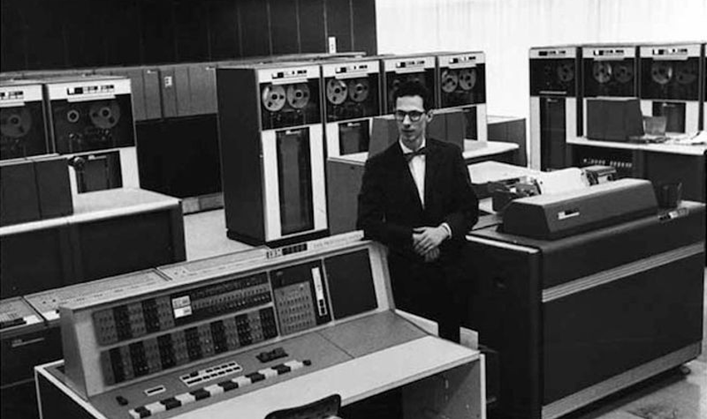
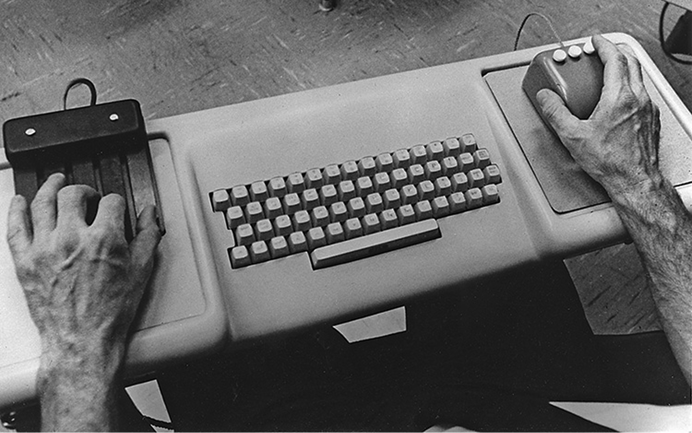

February 18th, 2026
The Mother of All Demos: The Moment Computing Leapt Forward
Image Credit: SRI International
A Quiet Revolution in 1968
On December 9, 1968, in a San Francisco convention hall filled with computer professionals, an event took place that would later be called “The Mother of All Demos.” At a time when computers were large, expensive machines operated through punch cards and cryptic commands, engineer Douglas Engelbart presented a radically different vision of how humans might interact with technology. Lasting about 90 minutes, the demonstration introduced concepts that would not become mainstream for decades—but would eventually define modern computing.
Computing Before Engelbart
In the 1960s, computers were primarily tools for governments, universities, and corporations. Interaction was indirect: users submitted jobs, waited for output, and rarely worked in real time.

Image Credit: MIT Museum
Engelbart, working at the Stanford Research Institute (SRI), believed this model limited human potential. His research group was driven by a bold goal: to augment human intellect using interactive computing systems.
This philosophy shaped the development of the oN-Line System (NLS), a pioneering platform designed not just to calculate, but to help people think, collaborate, and solve complex problems together.
The Demo Itself
During the demonstration, Engelbart and his team showcased a remarkable range of innovations—many of which would later become everyday tools. He demonstrated the computer mouse, on-screen windows, hypertext linking, word processing, real-time text editing, and even collaborative work through networked computers.
Perhaps most striking was the live video link between Engelbart on stage and his colleagues back at SRI, allowing them to edit documents together in real time. This was decades before the internet as we know it.
Reflecting on his vision, Engelbart once explained the core idea behind his work: “By augmenting human intellect we mean increasing the capability of a man to approach a complex problem situation, to gain comprehension to suit his particular needs, and to derive solutions to problems.” In the context of the demo, this quote captures his belief that computers could fundamentally reshape how humans create and share knowledge.
Video Credit: SRI International
Immediate Reception
Despite its ambition, the demo did not immediately transform the industry. Many attendees were impressed, but the technology was complex, expensive, and difficult to replicate. Commercial computing continued to move more slowly, and Engelbart himself struggled to gain long-term institutional support for his ideas.
However, the demonstration was carefully recorded, preserving a clear record of concepts far ahead of their time.
A Blueprint for the Future
In hindsight, the Mother of All Demos is widely regarded as one of the most influential events in the history of computing. Researchers at Xerox PARC, Apple, and later Microsoft drew inspiration from Engelbart’s work when developing graphical user interfaces, personal computers, and collaborative software.
Today, everyday actions—clicking a mouse, opening windows, editing shared documents—trace their roots back to that single presentation in 1968. While Engelbart did not reap the full rewards of his vision during his lifetime, his demo stands as a powerful reminder that transformative ideas often arrive long before the world is ready for them.
More than a technical showcase, the Mother of All Demos was a statement of possibility: that computers could be partners in human creativity, not just machines that process numbers.
Click Me!
Chorded Keyboard
The chorded keyboard was a 5-key key board that could be pressed with one hand. It complemented the mouse and the keyboard.
Click Me!
Qwerty Keyboard
Douglas Engelbart used a standard QWERTY typewriter-style keyboard for entering and editing text in real time. Unlike the punch card systems common in the 1960s, this keyboard allowed direct, immediate interaction with the computer—characters appeared instantly on the screen as he typed.
Click Me!
Mouse
Engelbart introduced a small wooden device with two perpendicular wheels—what he called a “mouse.” It allowed users to point, click, and manipulate objects on a screen intuitively.

Image Credit: National Museum of American History